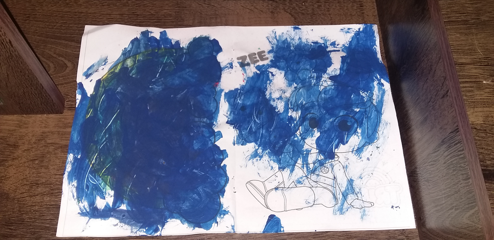

<!DOCTYPE html>
<html lang="pt-br">
<head>
    <meta charset="UTF-8">
    <meta http-equiv="X-UA-Compatible" content="IE=edge">
    <meta name="viewport" content="width=device-width, initial-scale=1.0">   
    <title>Minha filha Manuela</title>
    <link rel="shortcut icon" href="imagens_site/favicon2.ico" type="image/x-icon">
    <link rel="stylesheet" href="manuela.css"/>
</head>
<body>
    
</body>
</html>

    <body>
        <h1>Manuela</h1>
        <h3>Me chamo Manuela, tenho 2 anos e 9 meses e sou conhecida como: Nunu, Manu,
        Nuela e gatinha do papai. Meu nome seria teodora, mas como a gata ainda estava 
        viva meus pais optaram por Cecília que é a padroeira dos musicos. sim,
        minha família é um pouco musical, meu pai toca violão e guitarra e minha mãe canta 
        muito bem, ela é afinadissíma, mas....como houve um outro problema,
        colocaram Manuela que é a versão feminina de Manuel e significa D'us conosco.</h3>

        <div class="bloco-um">
            
        </div>

        <div class="bloco-dois">
            
        </div>

        <div class="bloco-tres">
            <p>Hoje, no dia 22/07 meu irmão e eu deitamos com a mamãe depois do almoço, coisa que a gente sempre faz. Então,
               quando acordamos, meu pai nos chamou para pintar. Ele colocou na sala as cadeiras e a mesa
               e começamos a fazer as nossas obras de arte.</p>
        </div>

        <div class="bloco-quatro">
            
        </div>

        <div class="bloco-cinco">
            
        </div>

        <div class="bloco-seis">
            <p>Assim que sentamos a mesa começei a pensar quais as cores iria usar</p>
        </div>

        <div class="bloco-sete">
            
        </div>

        <div class="bloco-oito">
            <P>E começei a utilizar meus dons artisticos</P>
        </div>

        <div class="bloco-nove">
            
        </div>

        <div class="bloco-dez">
            
        </div>

        <div class="bloco-onze">
            <p>Com o auxilio do meu irmão Arthur, conseguimos finalizar nossas obras de arte.</p>
        </div>

        <div class="bloco-doze">
            
        </div>

        <div class="bloco-treze">
            
        </div>

    </body>

</html>